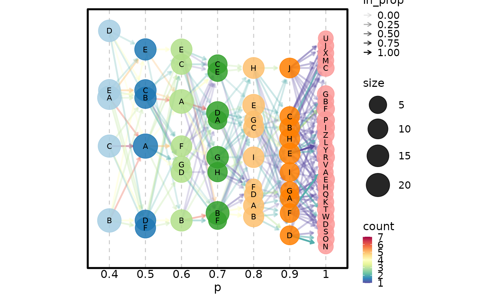
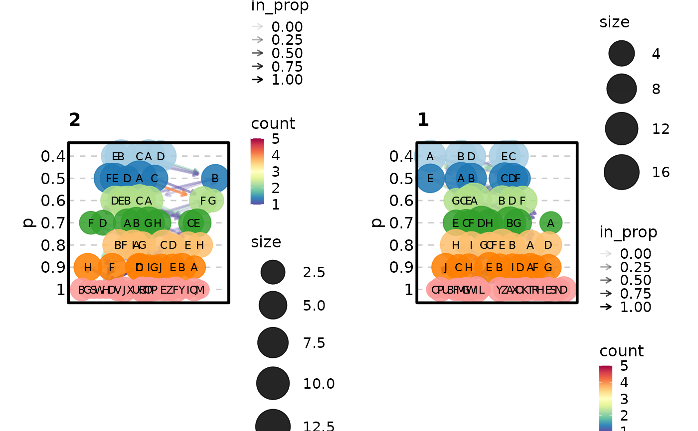

A plot visualizing Clusterings at Different Resolutions
Usage
ClustreePlot(
data,
prefix,
flip = FALSE,
split_by = NULL,
split_by_sep = "_",
palette = "Paired",
palcolor = NULL,
edge_palette = "Spectral",
edge_palcolor = NULL,
aspect.ratio = 1,
legend.position = "right",
legend.direction = "vertical",
title = NULL,
subtitle = NULL,
xlab = NULL,
ylab = NULL,
expand = c(0.1, 0.1),
theme = "theme_this",
theme_args = list(),
combine = TRUE,
nrow = NULL,
ncol = NULL,
byrow = TRUE,
seed = 8525,
...
)Arguments
- data
A data frame.
- prefix
A character string of the prefix of the columns to plot. The columns with the prefix will be used to plot the tree.
- flip
A logical value to flip the tree.
- split_by
The column(s) to split data by and plot separately.
- split_by_sep
The separator for multiple split_by columns. See
split_by- palette
A character string specifying the palette to use.
- palcolor
A character string specifying the color to use in the palette.
- edge_palette
A character string of the palette name to color the edges.
- edge_palcolor
A character vector of colors to color the edges.
- aspect.ratio
A numeric value specifying the aspect ratio of the plot.
- legend.position
A character string specifying the position of the legend. if
waiver(), for single groups, the legend will be "none", otherwise "right".- legend.direction
A character string specifying the direction of the legend.
- title
A character string specifying the title of the plot. A function can be used to generate the title based on the default title. This is useful when split_by is used and the title needs to be dynamic.
- subtitle
A character string specifying the subtitle of the plot.
- xlab
A character string specifying the x-axis label.
- ylab
A character string specifying the y-axis label.
- expand
The values to expand the x and y axes. It is like CSS padding. When a single value is provided, it is used for both axes on both sides. When two values are provided, the first value is used for the top/bottom side and the second value is used for the left/right side. When three values are provided, the first value is used for the top side, the second value is used for the left/right side, and the third value is used for the bottom side. When four values are provided, the values are used for the top, right, bottom, and left sides, respectively. You can also use a named vector to specify the values for each side. When the axis is discrete, the values will be applied as 'add' to the 'expansion' function. When the axis is continuous, the values will be applied as 'mult' to the 'expansion' function. See also https://ggplot2.tidyverse.org/reference/expansion.html
- theme
A character string or a theme class (i.e. ggplot2::theme_classic) specifying the theme to use. Default is "theme_this".
- theme_args
A list of arguments to pass to the theme function.
- combine
Whether to combine the plots into one when facet is FALSE. Default is TRUE.
- nrow
A numeric value specifying the number of rows in the facet.
- ncol
A numeric value specifying the number of columns in the facet.
- byrow
A logical value indicating whether to fill the plots by row.
- seed
The random seed to use. Default is 8525.
- ...
Additional arguments.
Examples
set.seed(8525)
N = 100
data <- data.frame(
p.0.4 = sample(LETTERS[1:5], N, replace = TRUE),
p.0.5 = sample(LETTERS[1:6], N, replace = TRUE),
p.0.6 = sample(LETTERS[1:7], N, replace = TRUE),
p.0.7 = sample(LETTERS[1:8], N, replace = TRUE),
p.0.8 = sample(LETTERS[1:9], N, replace = TRUE),
p.0.9 = sample(LETTERS[1:10], N, replace = TRUE),
p.1 = sample(LETTERS[1:30], N, replace = TRUE),
split = sample(1:2, N, replace = TRUE)
)
ClustreePlot(data, prefix = "p")
#> Registered S3 method overwritten by 'gglogger':
#> method from
#> +.gg ggplot2
ClustreePlot(data, prefix = "p", flip = TRUE)

ClustreePlot(data, prefix = "p", split_by = "split")
